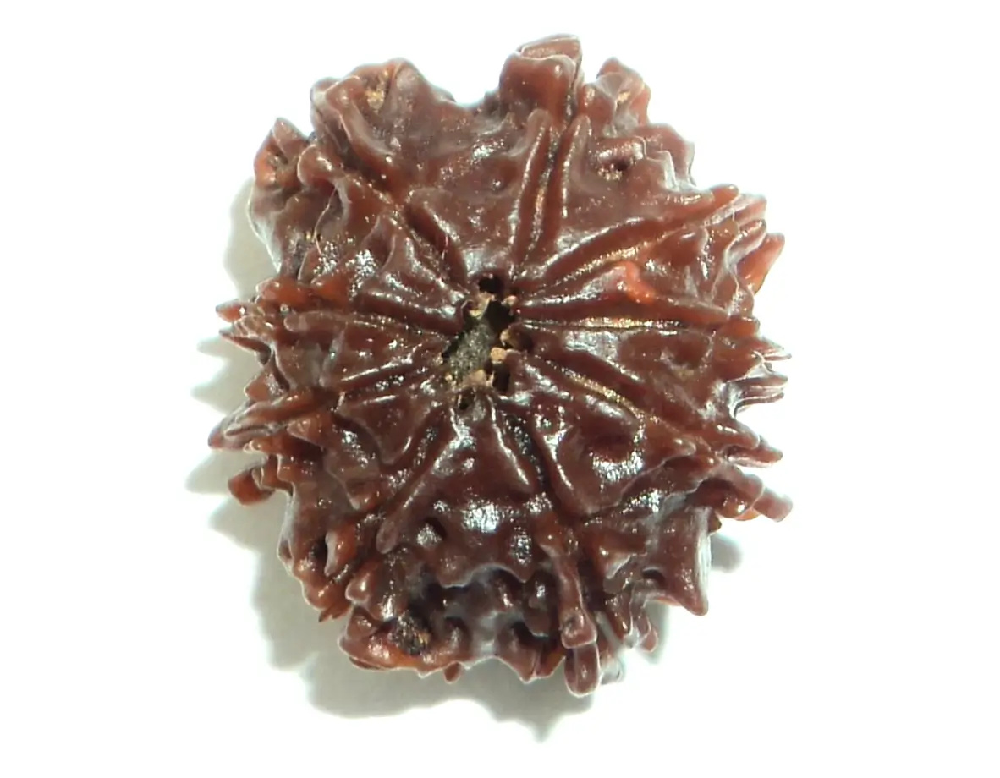
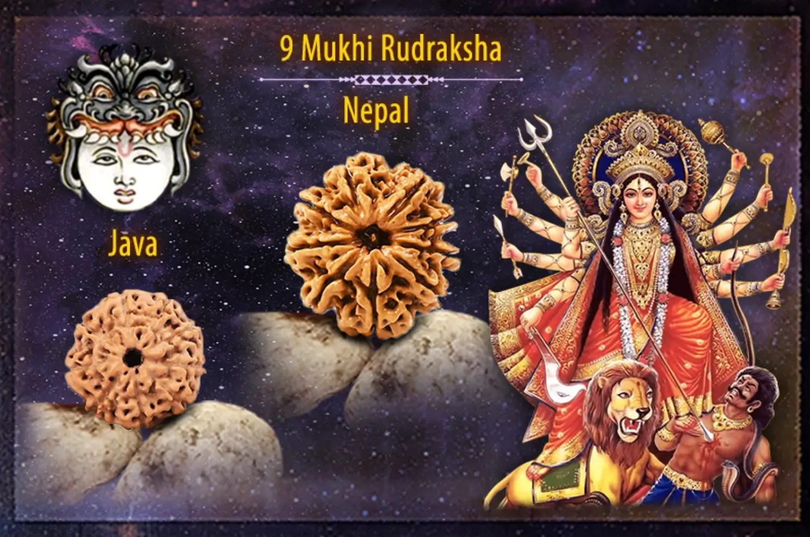

Nau Mukhi Rudraksha - Hạt Kim Cang 9 Khía
Hạt Rudraksha 9 Mukhi ( Nau Mukhi Rudraksha) còn có tên gọi khác là hạt Kim Cang 9 Khía, nguồn gốc của hạt Rudraksha này đến từ một loại cây thân gỗ lớn thường mọc ở các khu vực Đông Nam Á, dãy Himalaya và Đông Ấn Độ. Các hạt Kim Cang 9 Khía có nguồn gốc từ Ấn Độ thường có kích thước từ 8mm -18mm, bề mặt hạt có 9 đường khía được thể hiện rõ và có hình dáng tròn trịa hơn các hạt 9 Khía có nguồn gốc khác.
Đây là một loại hạt xuất hiện khá hiếm trong tự nhiên chỉ chiếm khoảng 1% - 2%, hạt Kim Cang 9 Khía giúp người đeo tránh khỏi năng lượng tiêu cực, mang lại bình an và may mắn.

Ý nghĩa của hạt Rudraksha 9 Mukhi
Nau Mukhi Rudraksha làm tăng sự kết nối với Nữ thần Durga và ban phước với sức mạnh tiêu diệt tội lỗi và lo lắng. Hạt này có thể bảo vệ và loại bỏ các nguồn năng lượng xấu.
Một trong những Rudraksha thiêng liêng và tốt lành nhất đại diện cho năng lượng là 9 Mukhi Rudraksha.Hạt này mang năng lượng thần thánh của Maa Durga trong tất cả chín hình dạng hùng vĩ của Cô ấy ( Nữ thần Durga). Theo Rudraksha Jabalo Upanishad, hạt Kim Cang 9 Khía sở hữu sức mạnh ngoạn mục của cả chín nữ thần. Rudraksha này cũng được Kaal Bhairav ban phước. Hầu hết những người đi làm cũng như phụ nữ nội trợ đều thích đeo hạt Rudraksha 9 Mukhi huyền bí này vì nó có sức mạnh của Maa Durga. Chiếc Rudraksha này khi đeo đúng cách sẽ thể hiện phẩm chất dũng cảm, không sợ hãi và năng động cùng với những thành tựu vật chất.

Lợi ích của hạt Rudraksha 9 Mukhi
Hạt Kim Cang 9 Khía mang lại rất nhiều lợi ích cho người đeo, cả về mặt tinh thần lẫn thể chất. Cụ thể có những lợi ích sau:
Về mặt tinh thần
Giúp tâm trí bình an, tĩnh tâm
Hạt Rudraksha 9 Mukhi được coi là một biểu tượng của sự bình an và tĩnh tâm. Khi đeo hạt này người đeo sẽ cảm thấy tâm trí được thư thái, bình yên, dễ dàng tập trung và suy nghĩ thấu đáo hơn.
Tăng cường trí nhớ, sự tập trung
Hạt Rudraksha 9 Mukhi giúp kích thích các dây thần kinh và cải thiện lưu thông máu lên não. Người đeo sẽ có trí nhớ tốt hơn, khả năng tập trung cao hơn và khả năng học hỏi nhanh hơn.
Cải thiện khả năng suy nghĩ, sáng tạo
Hạt Rudraksha 9 Mukhi hỗ trợ kích thích não bộ sản sinh các hormone hạnh phúc, giúp người đeo có tinh thần sảng khoái, vui vẻ và lạc quan. Nhờ đó, người đeo sẽ có khả năng suy nghĩ, sáng tạo tốt hơn.
Giúp giải tỏa căng thẳng, mệt mỏi
Hạt Rudraksha 9 Mukhi giúp người đeo dễ dàng thư giãn và giải tỏa căng thẳng. Sẽ có một giấc ngủ ngon và tinh thần thoải mái, sảng khoái hơn.
Giúp người đeo có một giấc ngủ ngon
Hạt Rudraksha 9 Mukhi giúp kích thích sản sinh melanin, một hormone giúp điều hòa giấc ngủ. Vì vậy người đeo nó sẽ có một giấc ngủ ngon và sâu hơn.
Về mặt thể chất
Giúp tăng cường sức khỏe, tăng cường sức đề kháng
Trong hạt Rudraksha 9 Mukhi chứa các khoáng chất và vitamin có lợi cho sức khỏe, giúp tăng cường sức đề kháng và bảo vệ cơ thể khỏi các nguồn năng lượng tiêu cực.
Giúp điều hòa huyết áp, giảm đau đầu
Hạt Kim Cang 9 Khía hỗ trợ làm ổn định nhịp tim và huyết áp, giúp giảm đau đầu và các vấn đề về tim mạch.
Giúp cải thiện hệ tiêu hóa
Hạt Rudraksha 9 Mukhi kích thích tiêu hóa, giúp ăn ngon miệng và hấp thụ chất dinh dưỡng tốt hơn.
Cách đeo hạt hạt Rudraksha 9 Mukhi
Hạt Rudraksha 9 Mukhi phù hợp cho tất cả mọi người, không phân biệt giới tính, tôn giáo hay tín ngưỡng. Tuy nhiên, hạt này đặc biệt phù hợp cho những người đang muốn cải thiện sức khỏe
Ngoài ra, hạt Rudraksha 9 Mukhi cũng phù hợp cho những người làm việc trong các lĩnh vực sáng tạo như nghệ sĩ, nhạc sĩ, nhà văn,.. Vì nó hỗ trợ kích thích khả năng sáng tạo và trí tưởng tượng.
Để đạt được lợi ích tối đa từ hạt Rudraksha 9 Mukhi, người sở hữu nên đeo nó theo đúng cách. Thông thường, hạt này được đeo dưới dạng vòng cổ hoặc vòng đeo tay, và nên được đeo vào thời gian thức dậy và thời gian đi ngủ. Ngoài ra, người sở hữu cũng nên thường xuyên làm sạch hạt Rudraksha để giữ cho nó luôn trong trạng thái tốt nhất.
Giá của hạt Rudraksha 9 Mukhi
Giá của hạt Kim Cang 9 Khía phụ thuộc vào các yếu tố khác nhau từ độ chân thực của hạt cho đến nguồn gốc lẫn kích thước mà giá của nó có thể ở mức từ 150$ - 300$.